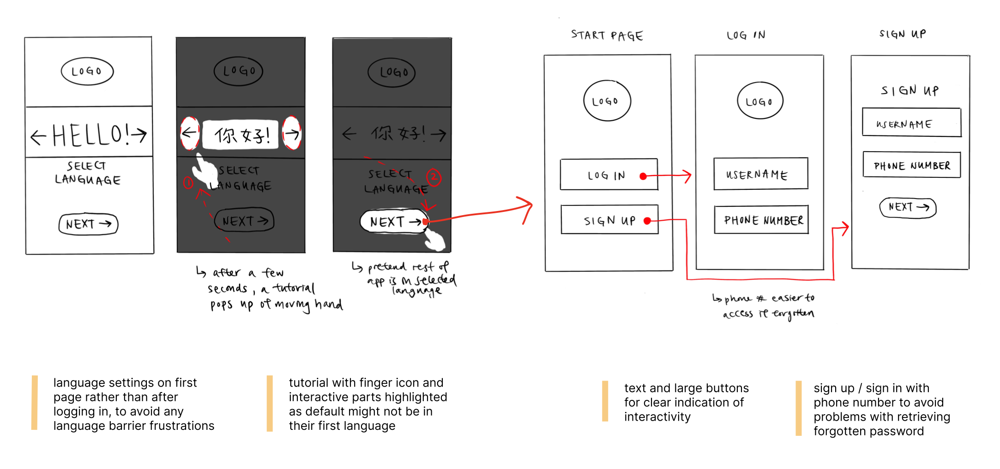
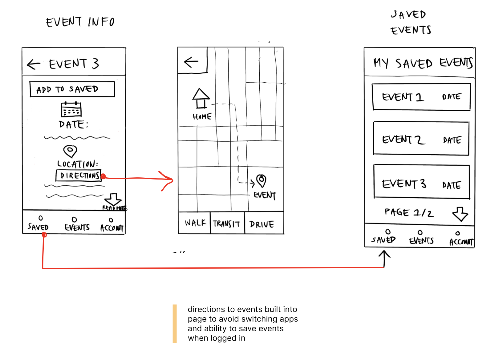
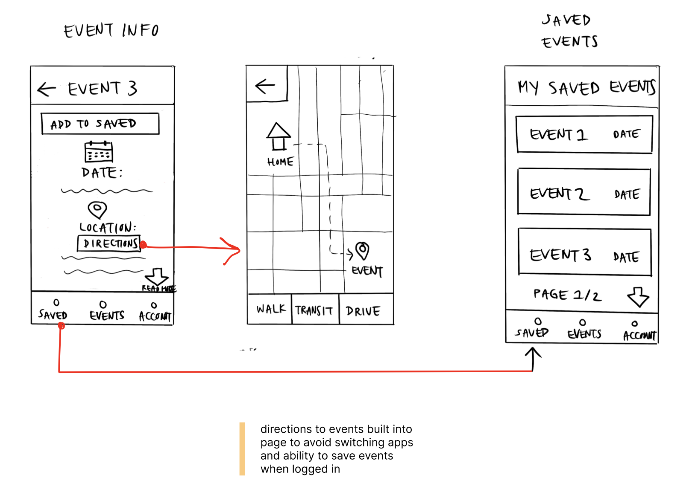

App for maintaining sociality among older Chinese diaspora
Problem:
As important as community is in East Asian culture, many older Chinese immigrant adults struggle to form meaningful social interactions due to language barriers and cultural differences.
Solution:
Creating an mobile app that allows older Chinese immigrant adults to find activities in their community that help them socialize and also maintain their connection to their culture while away from home.
Project constraints
Challenge: Redesign or add a feature to an existing mobile application to better address user needs
Time: 4 weeks
Designers: Me, Matthew, Owen
Step 01: Identifying Domain + User Research
We conducted online research to determine what kind of pain points are prevelant for older users and mobile apps. From this, we realized that older adults were at higher risk for loneliness, and immigrant populations were at even higher risk.
Step 02: User Personas
Then, we created a user persona to help clarify our target user group's goals.
Step 03: Wireframing
Next, we sketched low-fidelity wireframes for the app's layout.
 

Step 04: Low-fidelity mockup of prototype
Next we made low fidelity mockups of the prototype

Step 04: High-fidelity mockup of prototype
Based on feedback suggesting that we make the user interface relate better to the target user group, we were inspired by common motifs in traditional Chinese culture in designing the app interface.
Step 05: Prototype
Click to see the interactive prototype.We then created an interactive prototype using Prototpie to better demonstrate the user-experience of the app.
Challenges / Lessons Learned
One of the main challenges of this project was that our scope was initially too large as we had chosen to design for mutliple older adult diaspora communities. However, upon receiving feedback we narrowed our target user group to older Chinese immigrant adults so that the language feature in the app would be easier to implement and we could have a more specific idea of how to design the interface for this group.